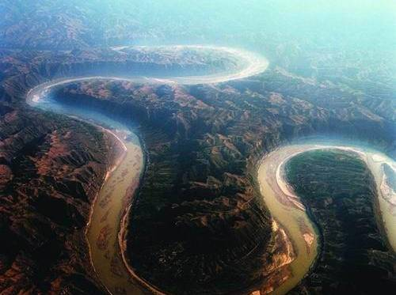
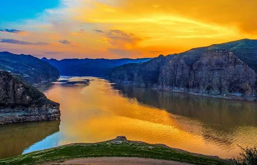
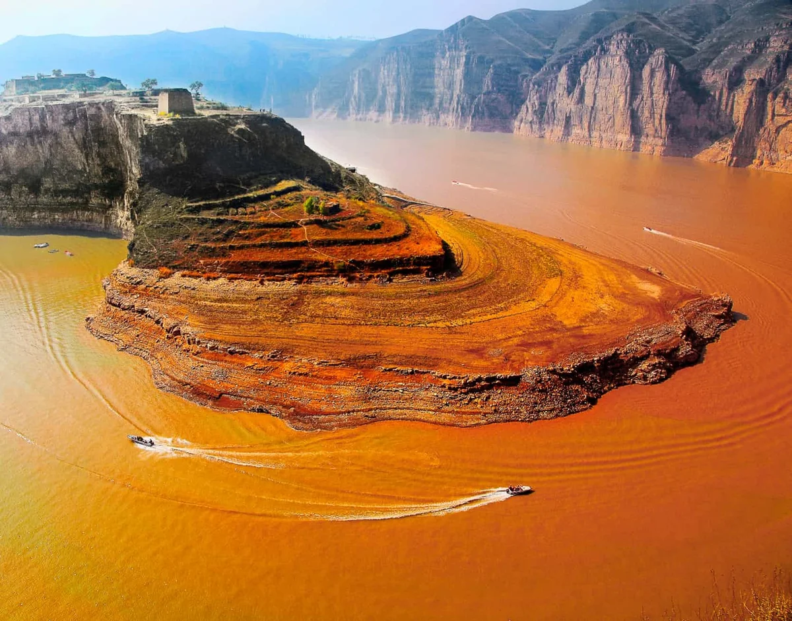
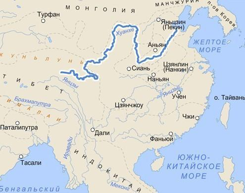

Хуанхэ
Главная страница


Хуанхэ — река в Китае, одна из крупнейших рек Азии. В переводе с китайского языка её название — «Жёлтая река», что связано с обилием наносов, придающих желтоватый оттенок её водам. Именно благодаря им море, в которое впадает река, называется Жёлтым. Бассейн Хуанхэ считается местом формирования и становления китайского этноса.
Хуанхэ берёт начало в восточной части Тибетского нагорья на высоте свыше 4500 м, протекает через озёра Орин-Нур и Джарин-Нур, отроги горных массивов Куньлунь и Наньшань. При пересечении Ордоса и Лёссового плато в своём среднем течении образует большую излучину, далее через ущелья Шаньсийских гор выходит на Великую Китайскую равнину, по которой течёт около 700 км до впадения в залив Бохайвань Жёлтого моря, формируя в районе впадения дельту. По разным данным длина реки от 4670 км до 5464 км, а площадь её бассейна от 745 тыс. км² до 771 тыс. км². Средний расход воды — 2571 м³/с.
Бассейн реки Хуанхэ обеспечивает около 140 миллионов человек питьевой водой и водой для орошения. Хуанхэ протекает в общей сложности через семь современных провинций и два автономных района, а именно следующие : Цинхай, Сычуань, Ганьсу, Нинся-Хуэй, Внутренняя Монголия, Шэньси, Шаньси, Хэнань и Шаньдун. К числу наиболее крупных городов, расположенных у современного русла реки, могут быть отнесены Ланьчжоу, Иньчуань, Ухай, Баотоу, Лоян, Чжэнчжоу, Кайфын и Цзинань. Устье Хуанхэ находится в уезде Кэньли.
Длинна: 5464 км
Площадь: 752 тыс. км²
Расход воды: 2571 м³/сек

ХУАНХЭ НА КАРТЕ